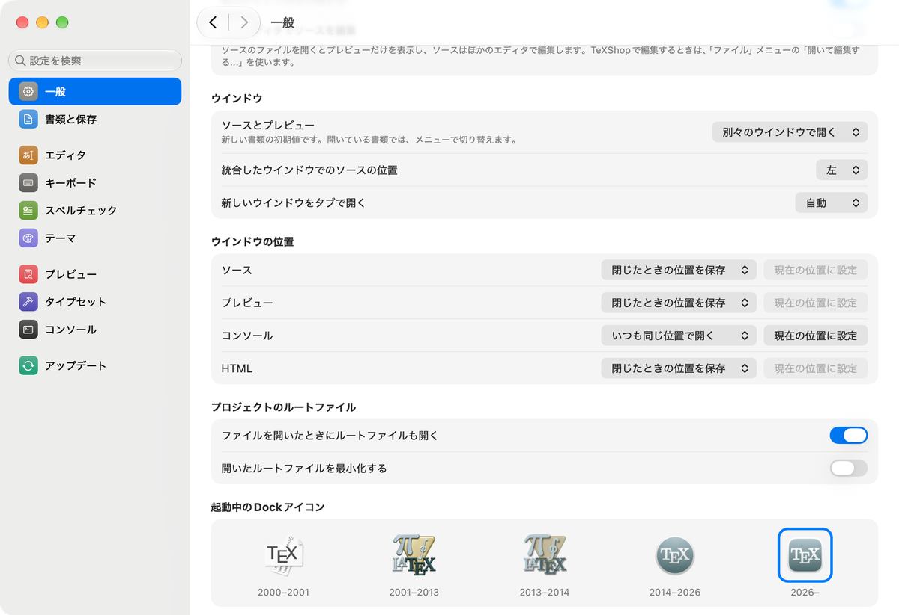

詳細検索パネル
正規表現を使える検索と置換のパネルです。「すべて検索」はすべての一致を行とともに一覧にし、「すべてハイライト」は本文の中の一致を示します。「複数置換」は、保存した検索と置換の組を順に適用し、1回で取り消せます。時間のかかる処理は裏で進み、キャンセルできます。

TeXShop 6.00（準備中） · 最新のベータを試す
TeXShop 6では、詳細検索パネル、LaTeXの構造を考慮するスペルチェック、固定できるリンクのポップアップ、新しい設定画面を加え、分割したプレビューウインドウの動きを改め、アプリのアイコンを新しくしました。
正規表現を使える検索と置換のパネルです。「すべて検索」はすべての一致を行とともに一覧にし、「すべてハイライト」は本文の中の一致を示します。「複数置換」は、保存した検索と置換の組を順に適用し、1回で取り消せます。時間のかかる処理は裏で進み、キャンセルできます。
TeXのコマンド、コメント、数式と、ラベル・キー・長さなどの引数を飛ばして検査します。よく使うパッケージの規則を備え、規則は編集できます。「すべて変更」は書類の中の同じ語をまとめて置き換え、1回で取り消せます。

Optionキーで内部リンクのポップアップを固定できます。固定したポップアップは、動かす、大きさを変える、スクロールすることができます。ポップアップは本文の段の幅に合わせ、リンク先のページのラベルを示し、連続表示では次のページへ続けて表示します。

境界線をドラッグしても、それぞれの部分の上端の内容は動きません。「ビューを切り替え」は二つの部分をそっくり入れ替え、作業中の部分は細い線で示します。「ウインドウを分割してリンク先を表示」は、リンク先をもう一方の部分に表示します。「内容の幅に合わせる」は、本文がウインドウの幅いっぱいになるように倍率を変えます。

10の分類と検索欄を備えます。メニューのショートカットとキーバインドは「設定」→「キーボード」で編集します。TeXとGhostscriptのインストール先をTeXShopが探し、一覧から選べます。

新しいアプリアイコン、歴代のデザインを含む5種類から選べるDockアイコン、macOS 26以降のLiquid Glassのツールバー、すべての言語でシステムフォントを使う画面の文字。
